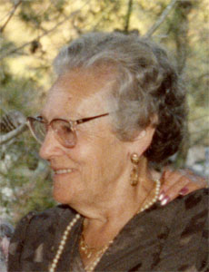

Manuel García Luceno & Magdalena Cantarero Cuenca
Manuel García Luceno & Magdalena Cantarero Cuenca  Manuel García Luceno & Magdalena Cantarero Cuenca
Manuel García Luceno & Magdalena Cantarero Cuenca  Magdalena Cantarero Cuenca Francisca Dolores García Cantarero
Magdalena Cantarero Cuenca Francisca Dolores García Cantarero
 Francisco García Cantarero Ana García Cantarero Pedro Juan García Cantarero
Francisco García Cantarero Ana García Cantarero Pedro Juan García Cantarero
This page is within a frameset. View the entire genealogy report of family Manuel García Luceno & Magdalena Cantarero Cuenca, or surname index or report summary.
Genealogy Search.
© 2006 GenoPro Inc. All Rights Reserved.